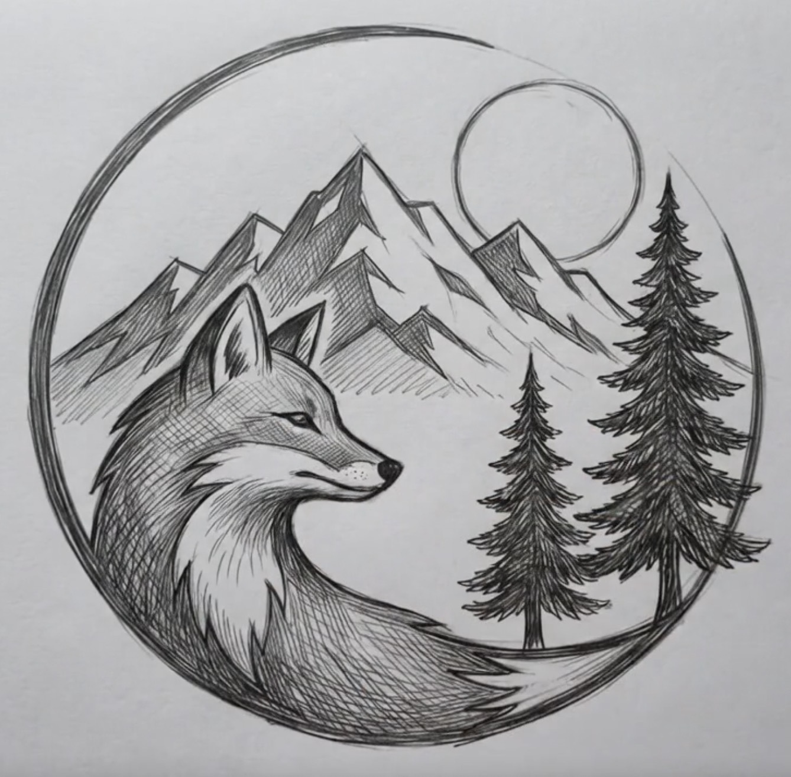
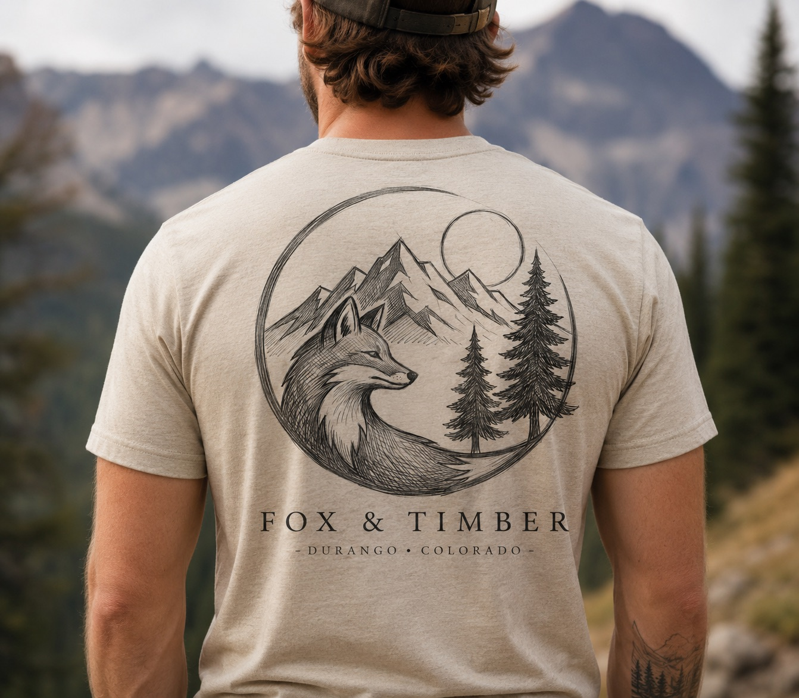
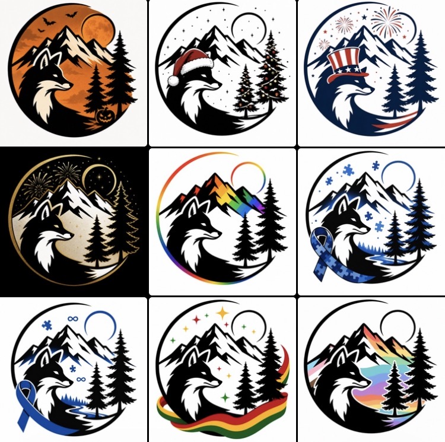

Experiment
Early ideas centered on digital tools, websites, and independent projects.
 fox & timber
fox & timber
Who we are
Fox & Timber began with a belief that creative work should be useful, honest, and connected to the world outside the screen.

The origin
The company grew out of years spent building ideas across design, technology, outdoor media, storytelling, and small business. The original identity changed as the work changed. What began as a more technical “lab” gradually became something broader and more human.
The fox became the right symbol: observant, adaptable, resourceful, and comfortable moving between different environments. Timber grounded the name in place, material, craft, and the forests surrounding our home in Southwest Colorado.
Early ideas centered on digital tools, websites, and independent projects.
The work grew into photography, branding, campaigns, publishing, apparel, maps, and outdoor storytelling.
Fox & Timber emerged as an identity that could hold all of it without pretending every project was the same.
Today the studio helps other businesses do the same: understand what they are becoming and express it clearly.

Our philosophy
We value curiosity over certainty, craftsmanship over speed for its own sake, and meaningful work over endless content. Good design should make something easier to understand, easier to trust, or easier to use.
A living identity
The fox has learned to change with seasons, communities, causes, and moments while staying recognizable. That flexibility is part of our approach to every brand system we build.
